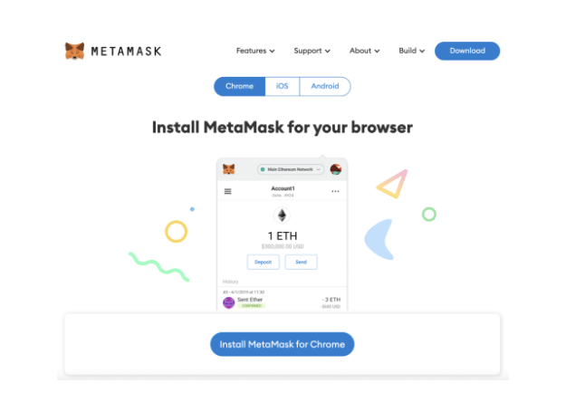
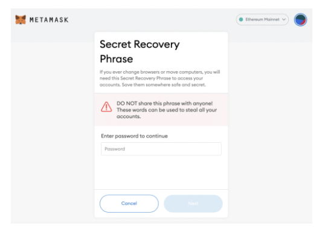
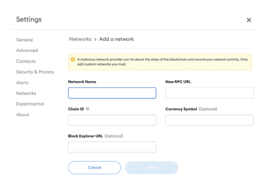
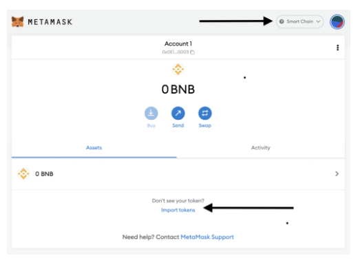
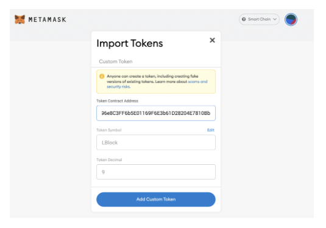
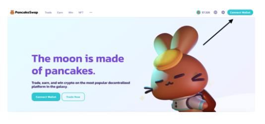
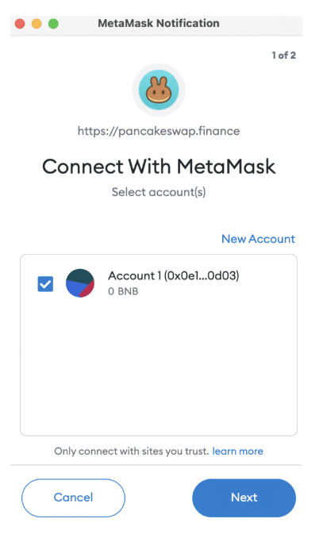
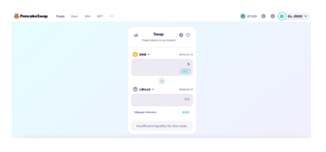

During the Dash2Trade pre-sale launch – which fulfilled its hard cap target 10 days early, we found that many investors elected to use MetaMask.
However, we also received a large number of messages from potential buyers – explaining that they could not figure out how to use MetaMask seamlessly.
With this in mind, this beginner’s guide will explain how to set up the MetaMask wallet so that you can safely buy and store Dash2Trade tokens.
If you’ve got a bit of knowledge of how wallets generally work – the below quickfire guide on how to set up MetaMask should suffice.
Dash2Trade Contract Address: insert contract address
Now that you have imported Dash2Trade into MetaMask – you should now be able to view the tokens that you either bought during the pre-sale or via Pancakeswap.
MetaMask is a lot more complicated to use in comparison to Trust Wallet. As such, if you need a more detailed walkthrough – read on.
As noted above, MetaMask is available in two forms – through a mobile app or a web browser extension. For the purpose of this guide – we will explain the required setup process when using MetaMask via a browser extension. The process is, however, pretty much identical when using the MetaMask app on iOS or Android.
So, the first step is to visit the MetaMask website and click on the ‘Download’ button. You will then be asked which web browser you wish to install MetaMask on.
Most people will either opt for Chrome or Firefox, albeit, Brave and Edge are also supported. In this tutorial, we are using Chrome.
Once you have installed the MetaMask extension on your preferred web browser, click on the ‘Create a Wallet’ button.
You will now be asked to create a password. It’s best to make this as long and varied as possible – by using a combination of upper and lower case letters, numbers, and other supported characters.
Step 3: Note Down Recovery PhraseThis step is potentially the most important, not least because you will now be shown your backup phrase. In a nutshell, this unique backup phrase comes in the form of 12 individual words.
If you, or anyone for that matter – enters these 12 words into MetaMask remotely – immediate access to the wallet is granted.
As such, not only is it important that you write your recovery phrase down – but equally, you need to keep the sheet of paper somewhere safe and secure.
And even more importantly – you must never share your 12-word MetaMask recovery phrase with anyone.
In the image above, you will notice from the top-right hand corner of the screen that by default – MetaMask is connected to the Ethereum network.
In fact, this is the only network that you can connect to when you first set MetaMask up. As such, you will need to manually add the Binance Smart Chain (BSc) network to your wallet.
First, click on ‘Ethereum Mainnet’ – followed by ‘Add Network’. You will then need to enter the specific contract details as prompted on-screen.
Taken directly from the official Binance website here – the required contract details are listed below.
Network Name: Smart Chain
New RPC URL: https://bsc-dataseed.binance.org/
ChainID: 56
Symbol: BNB
Block Explorer URL: https://bscscan.com
Next, click on the ‘Save’ button.
Now that you have manually connected to the BSc network – the next step is to import the Dash2Trade token into MetaMask.
This will subsequently allow you to buy and store Dash2Trade via MetaMask in a safe and secure manner.
To do this, you will first need to make sure that you are on the main interface for the BSc network. If so, your screen should look like the image below.
Next, click on the ‘Import Tokens’ button. In the field marked ‘Token Contract Address’ – you will need to paste in the unique Dash2Trade contract address.
For reference, see the Dash2Trade contract address below:
Dash2Trade Contract Address: insert contract address
You should, however, verify the above contract address yourself via the official Telegram group. Once you paste the correct address in, the empty fields should automatically populate and look like the image below:
Next, click on the ‘Add Custom Token’ button.
If you have already purchased Dash2Trade tokens – either throughout the pre-sale launch or on Pancakeswap, you should now be able to view your balance.
If, however, you are yet to buy any Dash2Trade tokens, you can do so by connecting your MetaMask wallet to Pancakeswap.
To do this, you will first need to visit the Pancakeswap website through the same web browser that your MetaMask wallet extension is installed on.
On Panakeswap, you will see the ‘Connect Wallet’ button. Click it and select ‘MetaMask’.
Your MetaMask extension will now open a small box to the right of the screen – which requires you to authorize the connection to Pancakeswap.
Once your wallet is connected to Pancakeswap, click on the ‘Trade’ button at the top of the page.
Then, by default, you will see that BNB is automatically selected as the cryptocurrency being used to fund your token purchase – which is correct.
However, we need to change receiving currency from CAKE over to Dash2Trade. To do this, click on CAKE and paste in the Dash2Trade contract address.
Dash2Trade Contract Address: insert contract address
Now you will need to specify how many Dash2Trade tokens you wish to buy. The best way of doing this is to enter your stake in terms of BNB. Pancakeswap will then tell you how many Dash2Trade tokens this translates into – at the current market price.
Note: The image above states that there is insufficient liquidity for this trade. This is because our guide was written prior to the Dash2Trade listing on Pancakeswap.
The final step is to confirm your token swap. If the transaction returns an error on Pancakeswap – this is likely because you:
You will receive a confirmation on-screen when the transaction has gone through. When it does, you should find that the Dash2Trade tokens are showing in your MetaMask wallet.
Tips on How to Keep Your MetaMask Wallet Safe
Now that you know how to set up MetaMask and subsequently add Dash2Trade tokens to your wallet, it’s important to recognize that it is your responsibility to keep your digital assets safe.
After all, MetaMask is a non-custodial wallet, which means that if your private keys get into the wrong hands and your funds are stolen – you will have nowhere to turn.
As such, to ensure that you follow strict security procedures, below we offer some tips on how to keep your Dash2Trade tokens safe when using MetaMask.
If you’re using MetaMask as a web browser extension, a good starting point is to ensure that your laptop device is protected by a strong screenlock password.
This means that if your laptop is lost or stolen – the person in possession of the device would find it difficult to access the browser that your MetaMask wallet is stored on.
In the meantime, you would be able to remotely secure your MetaMask wallet by entering your 12-word recovery phrase from a different device. Then, you could transfer your Dash2Trade tokens to a new wallet address.
As mentioned above, your 12-word recovery phrase will allow you to regain access to your MetaMask wallet in the event your device is lost or stolen – or, you forget your password.
Either way, it is paramount that you keep the sheet of paper that your recovery phrase is written on somewhere safe.
You might even consider having two sheets of paper – each of which has 6 of your recovery words. Then, you could keep each copy in two separate locations.
Another way to ensure that your MetaMask wallet is kept safe is to assess what other browser extensions you have installed.
Crucially, if you install an illegitimate extension on your browser – this could have the required tools to hack your MetaMask wallet.
There are many ways that hackers will attempt to access your MetaMask wallet remotely.
First, malware is a common choice for cybercriminals – which will result in a virus of some sort being installed onto your device. This can happen when you mistakenly click on a link that was created by the hacker.
Additionally, phishing attacks are becoming more and more commonplace in the cryptocurrency arena. This is where the hacker will attempt to steal your sensitive information – such as the 12-word passphrase for your MetaMask wallet.
For instance, this might come in the form of an email claiming to be from a member of the MetaMask support team. It might also come via a malicious imitation of an exchange like Pancakeswap.
Either way, you should really be careful about what links you click and which websites you visit.
The purpose of this beginner’s guide was to show you how to set up the MetaMask wallet from start to finish.
In doing so, you should now have a firm grasp of how to safely buy and store Dash2Trade tokens. Ultimately, just make sure that you install sensible security controls on your MetaMask wallet – which will ensure that your Dash2Trade tokens remain safe at all times.